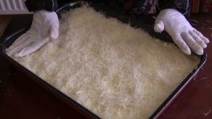

1-Kunafa with Ricotta and Cream Filling


Ingredients:
- 1/2 kilo kunafa
- 250 gm butter
- 200 gm cream
- 200 ricotta cheese
- For Syrup: 1 cup of sugar, 1/2 cup water and juice of 1/2 lemon
Method:
Warm the oven to 350°. Melt or soften butter in a pan. Shred the Kunafa either by hand or with scissors. Then, mix it well with butter. Divide Kunafa in two halves. Lay one half in a round or a rectangular pan, and then press gently with the palm of your hand on the surface. Save the other half. Meanwhile mix The Ricotta Cheese with cream in a bowl. (Some people prefer to put a little less cheese then the cream). With a spoon spread cheese mixture on the Kunafa;laying out evenly with the back of the spoon. Lay the other half of the Kunafa on top of the filling then again press down gently with the palm of your hand and push into the oven. Depending on the pan you use, (I use Tefal), I get it out when its sides shrink and turn into a dark golden color. Flip on prepared serving plate with golden bottom side up, leave it to cool for a minute then pour cold syrup all over. If your pan is aluminum its surface might turn gold first (I haven’t tried- I’d appreciate it someone lets me know what happens in an aluminum pans).
Syrup:
- Heat mixed sugar and water until sugar completely dissolves.
- Add lemon juice.
- Leave to boil until mixture thickens.
- Test that it is the right thickness by putting a drop on a tilted surface, if it’s runny, and then leave it some more. If it’s kind of heavy and doesn’t really run then you are done. Leave mixture to cool completely before adding to Kunafa.
Hints:
- Dip the spoon in a glass of water before spreading the cheese mixture; otherwise the filling will stick to the spoon along with the Kunafa.
- Either the syrup or the Kunafa must be very hot when combining, otherwise things will get soggy.
- You don’t have to use all the syrup, but pour enough to make it moist/ or to taste. You could always heat the syrup and add later when Kunafa cools to adjust to our taste.